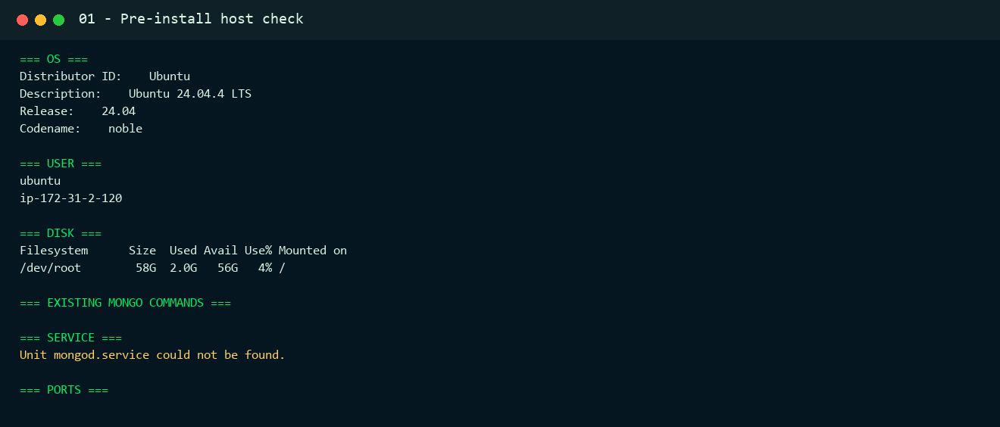
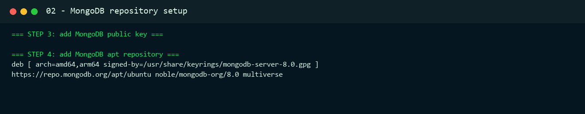
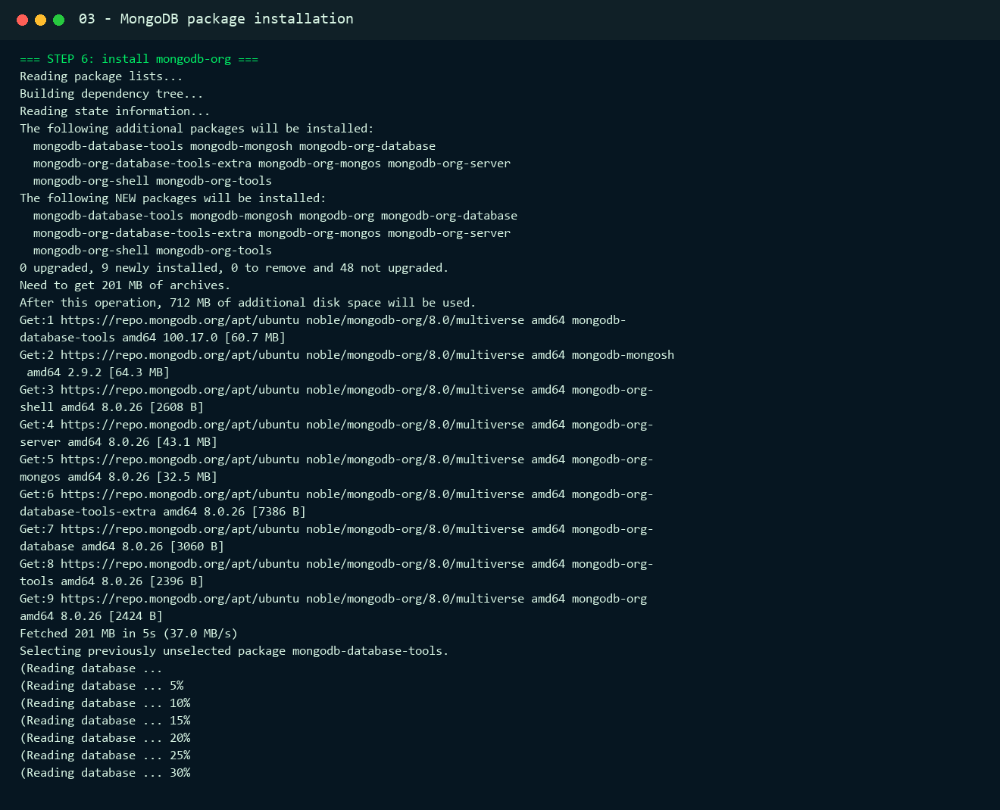
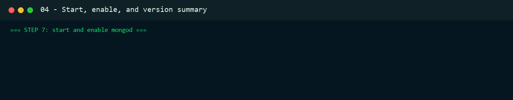
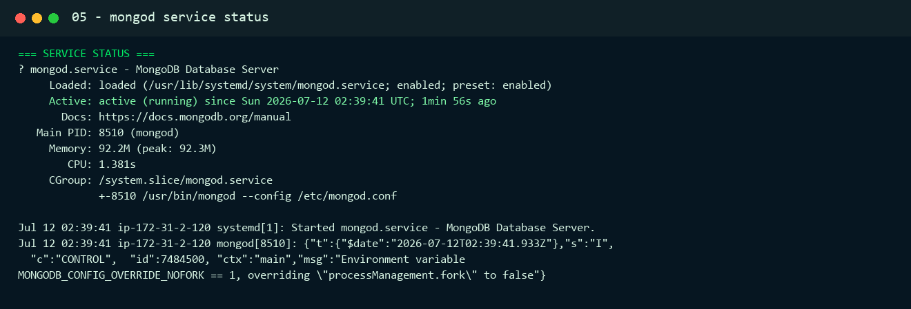
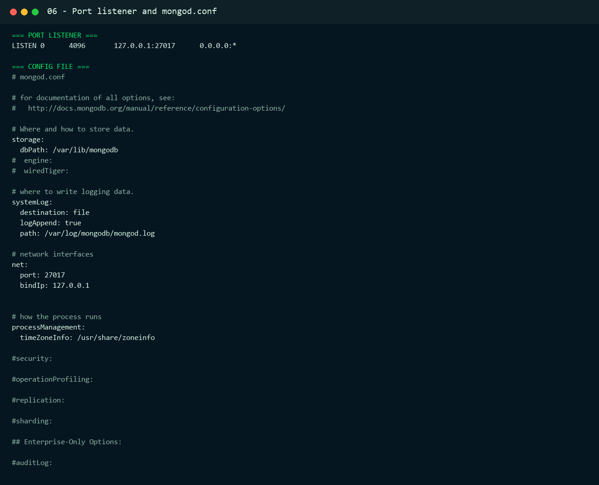
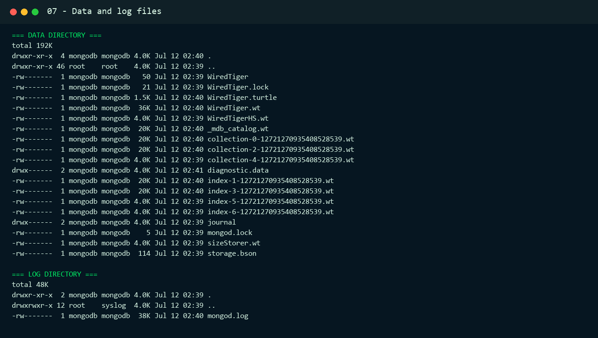
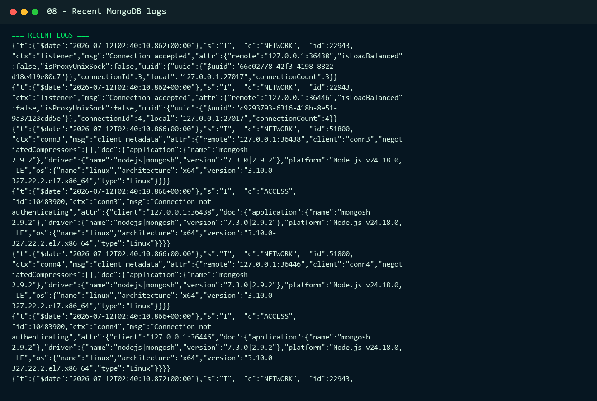
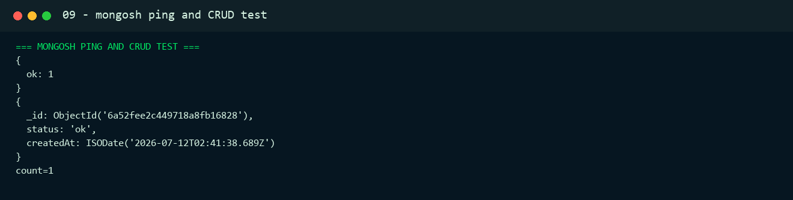
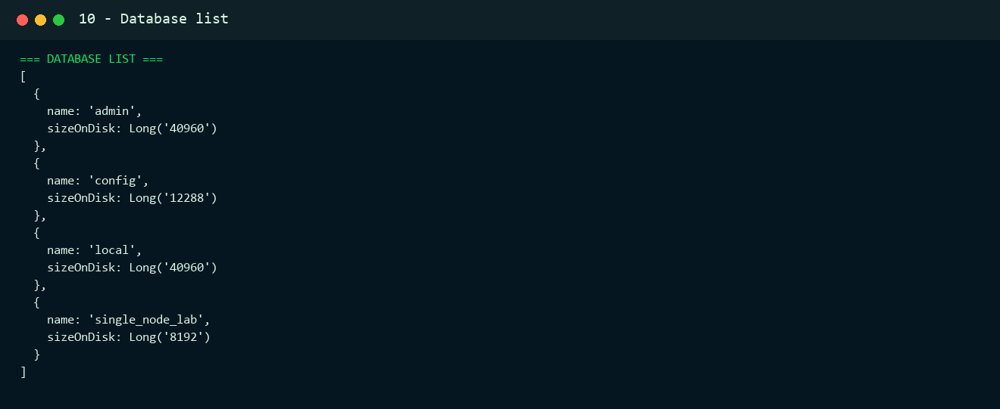

Result
Final Status
Everything is set. MongoDB Community Edition is installed, `mongod` is running, the service is enabled at boot, port `27017` is listening on localhost, the data and log directories exist, and `mongosh` successfully inserted and read a test document.
| Check | Result |
|---|---|
| Operating system | Ubuntu 24.04.4 LTS, codename `noble` |
| Remote host | `ubuntu@16.112.227.143`, hostname `ip-172-31-2-120` |
| MongoDB server | `mongod` version `v8.0.26` |
| MongoDB shell | `mongosh` version `2.9.2` |
| Service | `mongod.service` is `active (running)` and `enabled` |
| Network | Listening on `127.0.0.1:27017` |
| Data path | `/var/lib/mongodb` |
| Log path | `/var/log/mongodb/mongod.log` |
| CRUD test | Database `single_node_lab`, collection `install_check`, document count recorded as `1` during verification |
Step 1
Environment Check
The target host was checked before installation. MongoDB was not present, `mongod.service` did not exist, and port `27017` was free.
$ ssh -i D:\vinec2.pem ubuntu@16.112.227.143 "lsb_release -a; df -h /; command -v mongod; systemctl status mongod; ss -lntp | grep 27017"
Step 2
MongoDB Repository Setup
The MongoDB 8.0 APT repository was configured for Ubuntu 24.04 `noble`.
1Install prerequisites
$ sudo apt-get update
$ sudo apt-get install -y gnupg curl ca-certificates2Add MongoDB public key and repository
$ curl -fsSL https://www.mongodb.org/static/pgp/server-8.0.asc | sudo gpg --dearmor -o /usr/share/keyrings/mongodb-server-8.0.gpg
$ sudo chmod 644 /usr/share/keyrings/mongodb-server-8.0.gpg
$ echo "deb [ arch=amd64,arm64 signed-by=/usr/share/keyrings/mongodb-server-8.0.gpg ] https://repo.mongodb.org/apt/ubuntu noble/mongodb-org/8.0 multiverse" | sudo tee /etc/apt/sources.list.d/mongodb-org-8.0.list
$ sudo apt-get update
Step 3
Package Installation
The `mongodb-org` package set was installed from the MongoDB repository.
$ sudo apt-get install -y mongodb-org
Start and Enable Service
$ sudo systemctl start mongod
$ sudo systemctl enable mongod
$ mongod --version
$ mongosh --version
$ systemctl is-active mongod
$ systemctl is-enabled mongod
Step 4
Service Verification
The service was verified with `systemctl`. The final state is active and enabled.
$ systemctl status mongod --no-pager
$ systemctl is-enabled mongod
$ systemctl is-active mongod
Step 5
Port and Configuration Check
The MongoDB listener and default configuration file were checked. The service is bound to localhost on port `27017`, using `/var/lib/mongodb` for data and `/var/log/mongodb/mongod.log` for logs.
$ ss -lntp | grep 27017
$ sudo sed -n '1,120p' /etc/mongod.conf
Step 6
File and Log Check
The MongoDB data directory, log directory, and recent logs were checked after the service started.
$ sudo ls -lah /var/lib/mongodb
$ sudo ls -lah /var/log/mongodb
$ sudo tail -n 40 /var/log/mongodb/mongod.log

Step 7
mongosh Ping and CRUD Test
The final functional test used `mongosh` to ping the server, create a database, insert a document, read it back, and list databases.
$ mongosh --quiet --eval "printjson(db.adminCommand({ ping: 1 })); const lab = db.getSiblingDB('single_node_lab'); lab.install_check.insertOne({status:'ok', createdAt:new Date()}); printjson(lab.install_check.findOne({status:'ok'})); print('count=' + lab.install_check.countDocuments());"

Reference
Command Reference
SSH Access
$ ssh -i D:\vinec2.pem ubuntu@16.112.227.143MongoDB Service Commands
$ sudo systemctl status mongod
$ sudo systemctl start mongod
$ sudo systemctl stop mongod
$ sudo systemctl restart mongod
$ sudo systemctl enable mongodVerification Commands
$ mongod --version
$ mongosh --version
$ ss -lntp | grep 27017
$ sudo ls -lah /var/lib/mongodb
$ sudo tail -n 40 /var/log/mongodb/mongod.log
$ mongosh --quiet --eval "db.adminCommand({ ping: 1 })"Audit trail
Evidence Files
The following raw evidence files were saved locally while the installation was performed.
Completion Checklist
- Remote host reachable by SSH as `ubuntu`.
- MongoDB repository configured for Ubuntu 24.04 `noble`.
- `mongodb-org` installed.
- `mongod` started and enabled.
- Port `27017` listening on localhost.
- Config file inspected.
- Data directory inspected.
- Log file inspected.
- `mongosh` ping and CRUD test completed.